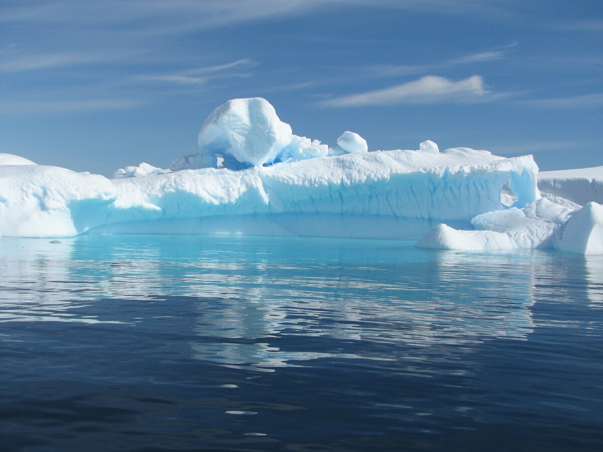

×

Greenland
История
Арктические народы населяли Гренландию и до открытия острова европейцами, однако к прибытию скандинавов его первые обитатели уже исчезли и остров был безлюден. Эскимосы-калаалиты, которых часто называют коренными жителями Гренландии, на самом деле появились там лишь в XIII веке, когда на острове уже двести лет как существовали поселения скандинавов. Однако, в отличие от них, эскимосы с тех пор не покидали остров и населяли его постоянно. Предками гренландских эскимосов являются носители культуры туле. Культура Туле возникла ок. 1000 года н. э. на Аляске и распространилась оттуда на всю северную Канаду, достигнув Гренландии в XIII веке. При этом она сменила культуру Дорсет, ранее занимавшую северо-восток Канады и северо-запад Гренландии. В фольклоре и в исландских письменных источниках есть свидетельства сложных отношений между эскимосами и скандинавскими поселенцами, населявшими Восточное поселение, Западное поселение и Ивиттуут.
Праздники
| Дата | Праздник | Примечание |
|---|
| 1 января | Новый год | Начало календарного года |
| 6 января | Богоявление | Богоявление |
| 21 июня | Национальный праздник | Национальный праздник |
| 24 декабря | Сочельник | Сочельник |
| 25 декабря | Рождество | Празднование Рождества |
| 26 декабря | Стефанов день | Стефанов день |
| 31 декабря | Канун Нового года | Канун Нового года |
____